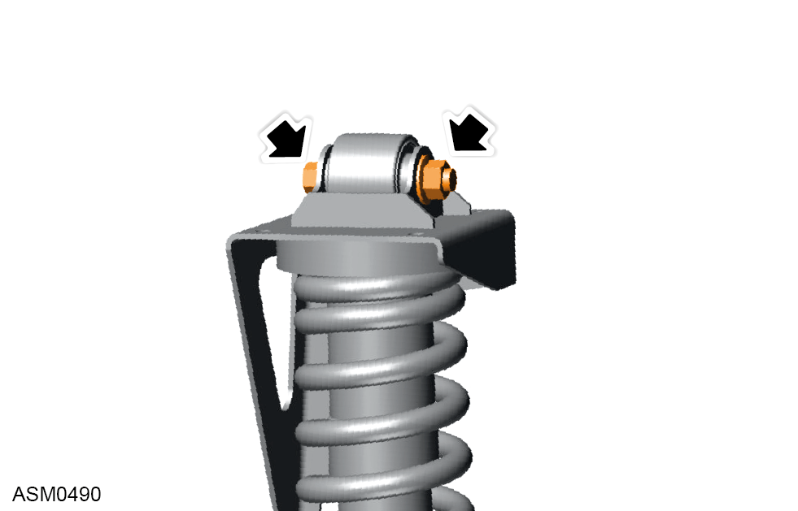
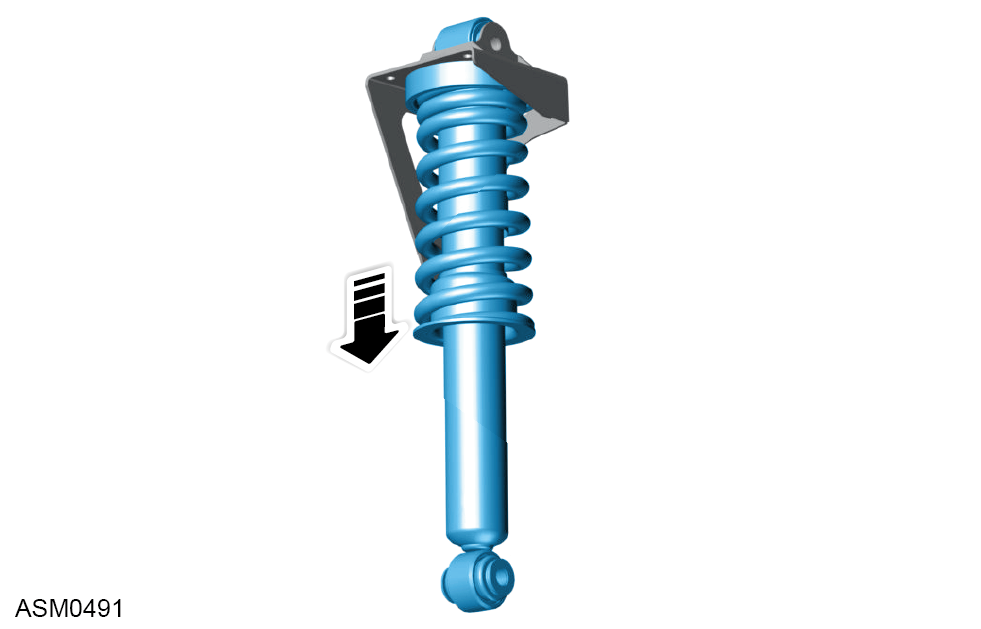
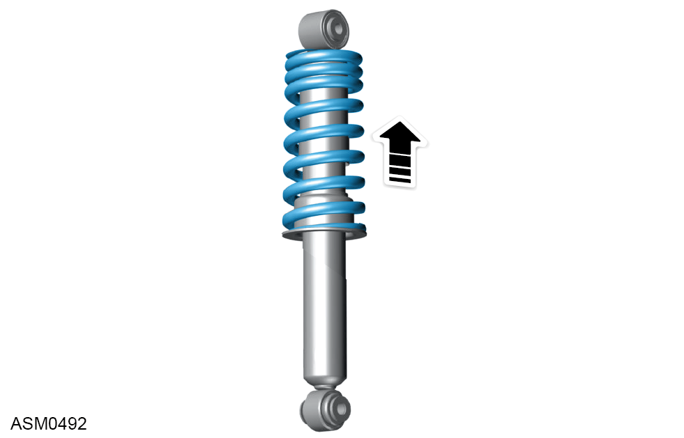

Removal

 WARNING: It is required to use a road spring compressor tool to prevent injury.
WARNING: It is required to use a road spring compressor tool to prevent injury.
NOTE: During installation, make sure the upper damper mounting bolt is oriented so the head of the bolt is fitted to the longer part of the mounting bracket.

